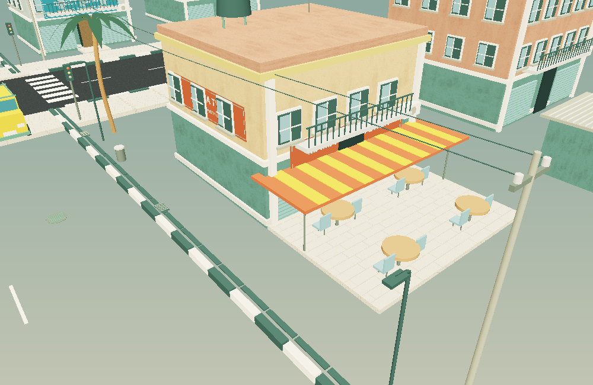
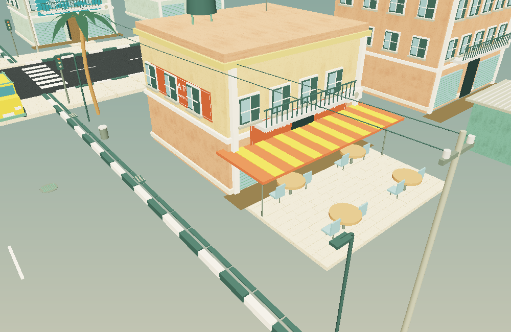
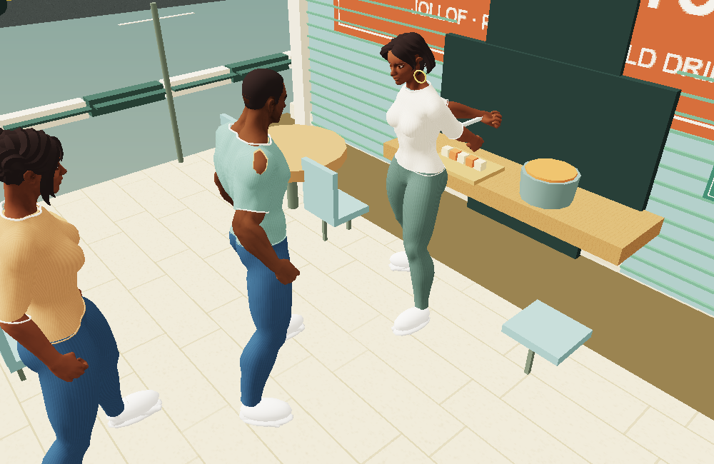
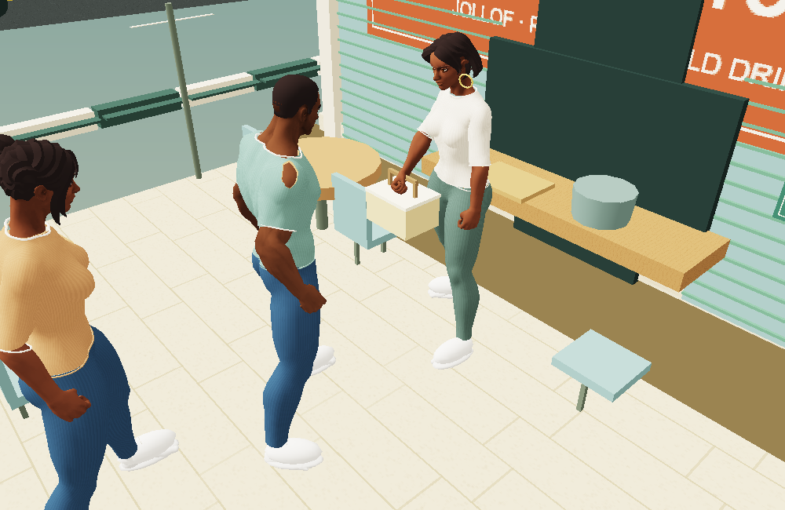

Street and Mama T’s review
Software-rendered evidence. Not browser screenshots, phone performance or device acceptance. Procedural poses and existing clothing have outstanding art issues.
Report and phone test steps · Home review

Before
After: warmer palette, shop details and inexpensive contact shadows
stir · two-customer service
serve · two-customer service